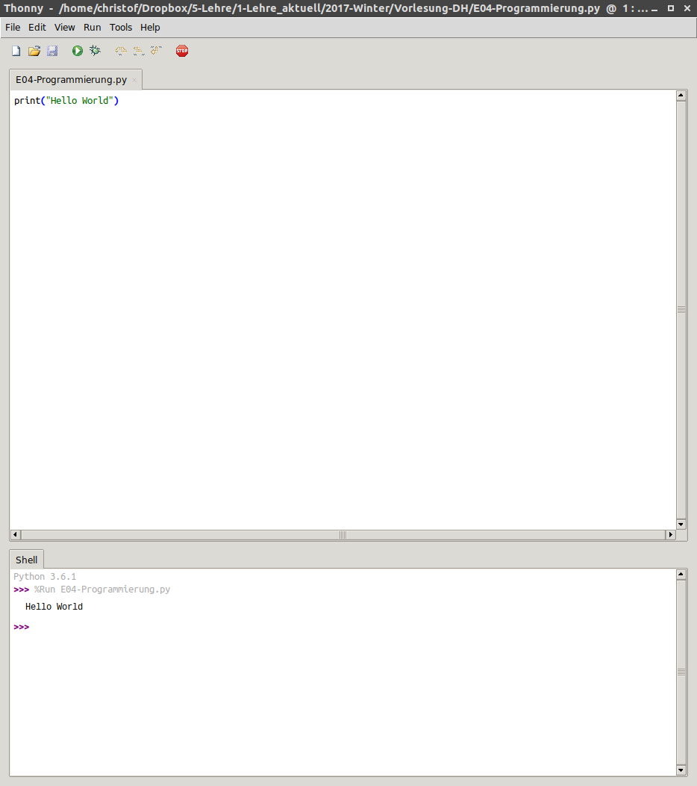
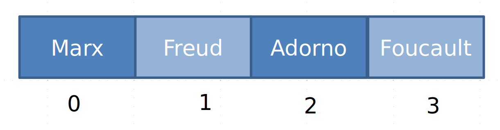
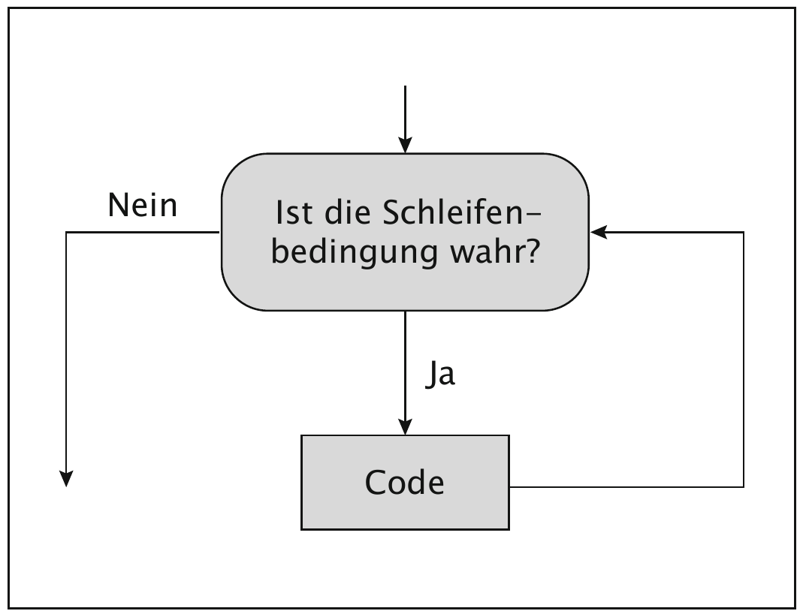
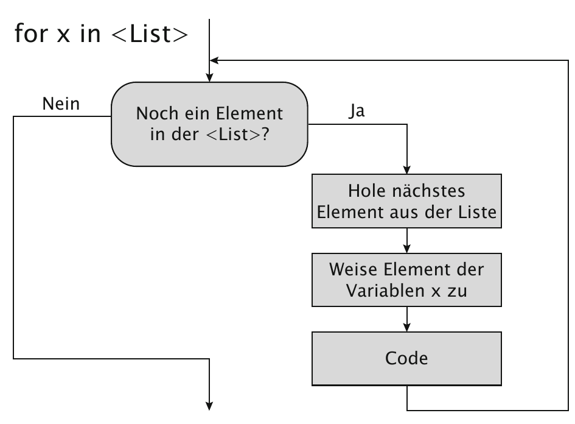
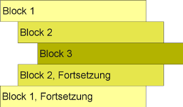
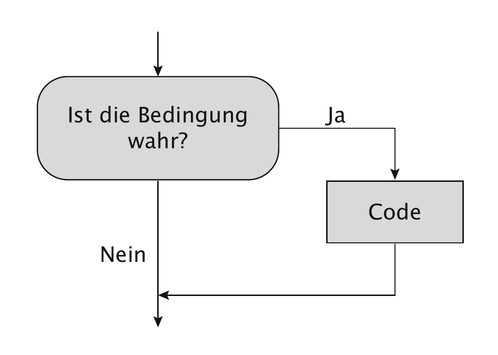

<!doctype html>
<html lang="en">
<head>
<meta charset="utf-8">
<!-- CUSTOMIZE THIS! -->
<title>Einführung in die Digital Humanities</title>
<meta name="author" content="Christof Schöch">
<!-- END -->
<meta name="description" content="Slides">
<meta name="apple-mobile-web-app-capable" content="yes">
<meta name="apple-mobile-web-app-status-bar-style" content="black-translucent">
<meta name="viewport" content="width=device-width, initial-scale=1.0, maximum-scale=1.0, user-scalable=no, minimal-ui">
<link rel="stylesheet" href="css/reveal.css">
<link rel="stylesheet" href="css/theme/simple.css" id="theme">
<!-- Code syntax highlighting -->
<link rel="stylesheet" href="lib/css/zenburn.css">
<!-- Printing and PDF exports -->
<script>
var link = document.createElement( 'link' );
link.rel = 'stylesheet';
link.type = 'text/css';
link.href = window.location.search.match( /print-pdf/gi ) ? 'css/print/pdf.css' : 'css/print/paper.css';
document.getElementsByTagName( 'head' )[0].appendChild( link );
</script>
<!--[if lt IE 9]>
<script src="lib/js/html5shiv.js"></script>
<![endif]-->
</head>


<body>
<div class="reveal">
<div class="slides">
<section data-markdown="" data-separator="^\n---\n" data-separator-vertical="^\n--\n" data-charset="utf-8" data-background-image="img/basics/uni-trier-mini.png" data-background-size="60px" data-background-position="top 10px right 10px">
<script type="text/template">
<br/>
## Grundbegriffe des Programmierens<br/>
<br/>
<hr/>
<br/>
<br/>Vorlesung *Einführung in die Digital Humanities*
<br/>MSc Digital Humanities | Wintersemester 2019/20
<br/>
<br/>
Prof. Dr. Christof Schöch
<br/>
<hr/>
</img>

---
# Einstieg


--
## Semesterüberblick

<small>

* 29.10.: Digital Humanities im Überblick
* 05.11.: Digitalisierung: Text und Bild
* **12.11.: Grundbegriffe des Programmierens**
* 19.11.: Datenmodellierung 1: Modellierung
* 26.11.: Datenmodellierung 2: Datenbanken
* 03.12.: Datenmodellierung 3: Text, Markup, XML
* 10.12.: Digitale Edition
* 17.12.: Geschichte der Digital Humanities
* 21.12.-5.1.: *Weihnachtspause*
* 07.01.: Informationsvisualisierung
* 14.01.: Natural Language Processing
* 21.01.: Quantitative Analyse 1: Stilometrie, Topic Modeling
* 28.01.: Quantitative Analyse 2: Superv. Machine Learning
* 04.02.: Open Humanities
* 11.02.: Klausurtermin

</small>

--
## Sitzungsüberblick
<br/>
1. Einstieg: Programmiersprachen
2. Grundbegriffe: Variablen, Datentypen, Operatoren
3. Grundbegriffe: Datenstrukturen, Funktionen und Methoden
3. Programmstrukturen: Schleifen, Bedingungen, Verzweigungen
4. Bausteine eines Programms
5. Beispiel: Anzahl der Worte in einem Satz
6. "Think like a programmer" -- aber wie?


---
# 1. Einstieg: Programmiersprachen

--
## Typen von Programmiersprachen
<br/>
* Assembler-Programmierung ("Maschinensprache")
* Höhere Programmiersprachen
    * "kompilierte" Sprachen wie Pascal, C++
    * "interpretierte" Sprachen wie PHP, Perl oder Python

--
## Beispiel-Sprache: Python
<br/>
* Eine Skript-Sprache, die uns einige Details abnimmt <!-- .element: class="fragment" data-fragment-index="1" -->
    * interpretierte Sprache (Prototyping)
    * implizite Datentypen in Variablen
    * automatische Speicherverwaltung
* für Menschen ziemlich gut lesbar <!-- .element: class="fragment" data-fragment-index="2" -->
* performant v.a. durch darunterliegende Implementierungen in C <!-- .element: class="fragment" data-fragment-index="3" -->
* Zahlreiche sog. IDEs <!-- .element: class="fragment" data-fragment-index="4" -->
    * "Integrated Development Environments"
    * Beispiele: Thonny, Geany, Atom, Spyder, PyCharm, etc.

--
## Thonny
</img>
<br/>http://thonny.org/

---
# 2. Grundbegriffe

--
## Algorithmus
<br/>
* Folge von Anweisungen, um ein bestimmtes Ziel zu erreichen <!-- .element: class="fragment" data-fragment-index="1" -->
* (ähnlich: Kochrezept) <!-- .element: class="fragment" data-fragment-index="1" -->

--
## Variablen
<br/>
<pre>
<code>
busnummer = 13
busnummer = 10 + 3
</code>
</pre>
<br/>
* "busnummer" ist der Variablenname
* "=" ist das Zuweisungssymbol
* "13" ist der Variablenwert
* "10 + 3" ist ein Ausdruck
* Struktur: "Variable = Ausdruck"
* alles zusammen ist eine "Anweisung"

--
## Umgang mit Variablen
<br/>
<pre>
<code>
preis = 130
print(preis)
preis = preis + 10
print(preis)
preis += 10 # kürzer
print(preis)
</code>
</pre>

--
## Datentypen
<br/>
* "Zusammenfassung konkreter Wertebereiche und darauf definierten Operationen zu einer Einheit"
* Beispiele:
    * int ("integer", also ganze Zahlen)
    * float (Gleitkommazahl)
    * bool (Wahrheitswert: True oder False)
    * string (Zeichenkette)

--
## Datentypen
<br/>
<pre>
<code>
alter = 12
name = "Maus"
groesse = 12.26
groesse2 = "12,6"
istmaus = True

print(type(alter))
</code>
</pre>

--
## Datentypen und Operatoren (1)
<br/>
<pre>
<code>
mystring = "Eine Maus"
print(mystring)
print(type(mystring))
length = len(mystring)
print(length)
print(mystring.upper())
print(mystring.lower())
</code>
</pre>

--
## Datentypen und Operatoren (2)
<br/>
<pre>
<code>
wert1 = 3
wert2 = 7
ergebnis = wert1 + wert2
print(ergebnis)
</code>
</pre>

--
## Datentypen und Operatoren (3)
<br/>
<pre>
<code>
flaschenWein = 23
anzahlGaeste = 15
ergebnis = flaschenWein / anzahlGaeste
print(ergebnis)
</code>
</pre>

--
## Datentypen und Operatoren (4)
<br/>
<pre>
<code>
wert1 = "Heinrich"
wert2 = "Faust"
ergebnis = wert1 + wert2
print(ergebnis)
</code>
</pre>


--
## Datentypen und Operatoren (5)
<br/>
<pre>
<code>
alter = 8
alter = "acht"
ergebnis = age + alter
print(ergebnis)
</code>
</pre>


---
# Datenstrukturen und Operatoren

--
## Datenstrukturen
<br/>
* Bestimmtes Format, in dem die Daten vorliegen und vom Algorithmus angesprochen werden <!-- .element: class="fragment" data-fragment-index="1" -->
* Beispiele:  <!-- .element: class="fragment" data-fragment-index="1" -->
    * Liste (list)
    * Wörterbuch (dict)
    * Matrix (dataframe)

--
## Datenstruktur: Liste
</img>
<br/>
* Sequenzielle Struktur, durchgezählt ("Hausnummern")
* Jede Position in der Struktur kann einen Wert haben ("Familienname")
* Python: Zählung startet by 0 (!)

--
## Liste und Operatoren
<br/>
<pre>
<code>
meineListe = ['Marx','Freud','Adorno','Foucault']
print(meineListe)
print(meineListe[0])
print(len(meineListe))
print(meineListe[1:3])
</code>
</pre>


--
## Liste und Operatoren
<br/>
<pre>
<code>
meineListe = ['Marx','Freud','Adorno','Foucault']
print(meineListe)
meineListe[1] = 'Weber' # Zuweisung überschreibt
print(meineListe)
meineListe.append('Luhmann') # Anhängen
print(meineListe)
</code>
</pre>

--
## Funktion
<br/>
<pre>
<code>
meinText = "Ein kurzer Text."
len(meinText)
len("Ein kurzer Text")
textlaenge = len(meinText)
print(textlaenge)
</code>
</pre>
<br/>
* Funktion (bspw.: len, print)
* Parameter (Input für die Funktion: Daten, Parameter)

--
## Objekt und Methode
<br/>
<pre>
<code>
text = "Aber Hallo"
neuerText = text.lower()
print(neuerText)
</code>
</pre>
* "text": Ein Objekt vom Typ string
* "neuerText": Rückgabewert der Methode (in Variable)
* "lower()": Methode aller Objekte vom Typ "string"
* "()": kann Parameter der Methode enthalten

--
## Interaktion
<br/>
<pre>
<code>
name = input("Bitte Namen eingeben: ")
print(name, " - so ein schöner Name!")
</code>
</pre>

--
## Interaktion
<br/>
<pre>
<code>
zahl1 = int(input("Ich multipliziere gerne. Bitte erste Zahl eingeben: "))
zahl2 = int(input("Danke. Bitte eine zweite Zahl eingeben: "))
print("Danke! Das Ergebnis lautet", zahl1 * zahl2)
</code>
</pre>


---
# 4. Programmstrukturen: Schleifen, Bedingungen, Verzweigungen


--
## while-Schleife
</img>

--
## while-Schleife
<br/>
* So lange eine Bedingung wahr ist, führe einen bestimmten Code aus und prüfe wieder die Bedingung; wenn die Bedingung nicht wahr ist, führe den Code nicht aus.
<pre>
<code>
value = 12
while value > 5:
    print(value)
    value = value - 2
print("End of loop")</code>
</pre>

--
## Bedingungen
<br/>
* Bedingungen geben einen TRUE oder FALSE-Wert zurück
<pre>
<code>
x = 1
y = 0
print(x < y)   # testet "kleiner als"
print(x == y)  # testet auf Gleichheit
print(x >= y)  # testet „größer/gleich“
print(x != y)  # testet auf Ungleichheit
print("AU" in "LAUFEN") # enthalten?
print("AU" not in "LAUFEN") # nicht enthalten?
</code>
</pre>


--
## for-Schleife
</img>

--
## for-Schleife
<br/>
* Für jedes Element einer sequenziellen Datenstruktur, führe einen bestimmten Code aus, bis das Ende der Sequenz erreicht ist.
<pre>
<code>
mysequence = [4,2,8,7]
for element in mysequence:
    print(element)
print("End of loop")
</code>
</pre>


--
## for-Schleife (Iteration)
<br/>
<pre>
<code>
mysequence = "Katze"
for element in mysequence:
    print(element)
print("End of loop")
</code>
</pre>

--
## Blöcke in Python: Einrückung
<br/>
</img>


--
## Verzweigung
</img>


--
## if/elif/else-Verzweigung
<br/>
* Wenn die Bedingung 1 wahr ist, dann führe die Anweisungen 1 aus.
* (Ansonsten, wenn die Bedingung 2 wahr ist, dann führe die Anweisungen 2 aus.)
* Ansonsten, führe die Anweisungen 3 aus.

--
## Beispiel if/elif/else
<br/>
<pre>
<code>
string = "Käse"
print(string)
if "ä" in string:
    print("Ah! There is an ä.")
elif "ö" in string:
    print("Ah! There is an ö.")
else:
    print("Oh. No matches.")
</code>
</pre>

--
## Zusammengesetzte Bedingungen
<br/>
<pre>
<code>
string = "Käsekönig"
print(string)
if "ä" in string and "ö" in string:
    print("Ah! There is an ä and an ö.")
else:
    print("Oh. No matches.")
</code>
</pre>
<br/>
* Bedingung and Bedingung
* Bedingung or Bedingung

---
# 4. Bausteine eines Skripts

--
## Abstrakte Ebene: Funktionen
<br/>
* Input (Daten und Parameter)
* Algorithmus
    * Operationen, Methoden
    * Kontrollstrukturen: Bedingungen, Schleifen
* Output (Ergebnis)

--
## Beispielaufgabe
<br/>
* Zerlegen Sie einen Satz in seine Wörter; zeigen Sie die Wörter an und geben Sie die Anzahl der Wörter aus.
* Beispielsatz: "Die Katze sucht den Käsekönig"

--
## Pseudocode
<br/>
<small>
* Input: Beispielsatz als string
* Lege fest, was ein Buchstabe ist / was ein Trennzeichen ist
* Datenstruktur list (für die Wörter)
* Datenstruktur string (für die Buchstaben eines Worts)
* Kontrollstruktur:
    * Gehe durch den String, sammle die Buchstaben in der Buchstabenliste, bis ein Leerzeichen kommt
    * Wenn ein Leerzeichen kommt, sind die gesammelten Buchstaben ein Wort; füge das Wort der Wörterliste hinzu; lösche den Inhalt des Wortes
    * Wiederhole dieses Verfahren, bis das Ende des strings erreicht ist
* Zeige die Wörter in der Wörterliste an
* Zeige die Länge der Wörterliste an

</small>

--
## Potentielle Probleme
<br/>
* Was ist ein Buchstabe, was ist ein Trennzeichen?
* Wie können wir Daten zwischenspeichern?

--
## Beispiellösung
<pre>
<code>
satz = "Die Katze sucht den Käsekönig"
trenner = " "
wörter = []
wort = ""
for element in satz:
    if element != trenner:
        wort = wort+element
    else:
        wörter.append(wort)
        wort = ""
print(wörter)
print(len(wörter))
</code>
</pre>

--
## Beispiellösung (Funktion)
<pre>
<code>
satz = "Die Katze sucht den Käsekönig"
def count_words(satz): 
    trenner = " "
    wörter = []
    wort = ""
    for element in satz:
        if element != trenner:
            wort = wort+element
        else:
            wörter.append(wort)
            wort = ""
    return wörter

wörter = count_words(satz)
print(wörter)
print(len(wörter))
</code>
</pre>


--
## Etwas komplexeres Skript
<br/>
* test.py (separat)
* Siehe: Funktionen, Funktionsaufrufe
* Input, Output
* Lesbarkeit


---
## 6. "Think like a programmer" -- aber wie?

--
## Aspekte
<br/>
* Fragestellungen operationalisieren
* Abläufe zerlegen
* Vorausschauend denken
* Überblick bewahren
* Effiziente Lösungen finden

--
## Entwicklungsschritte
<br/>
1. Problem analysieren
2. Spezifikation erstellen
3. Design erstellen
4. Design implementieren
5. Programm testen, Fehler suchen
6. Programm dokumentieren
7. Programm warten / weiterentwickeln


---
# Abschluss

--
## Fragen?

--
## Lektürehinweise
<small>

* Fotis Jannidis, "Grundbegriffe des Programmierens", in: *Digital Humanities: Eine Einführung*, hg. von Fotis Jannidis, Hubertus Kohle und Malte Rehbein. Stuttgart: Metzler, 2017, S. 68-95.
<br/>
<br/>
**Weitere Empfehlungen**
* Bernd Klein, *Python 3-Tutorial*, 2014. https://www.python-kurs.eu/python3_kurs.php
* *Das Python-Tutorial 3.3*. Read the docs. http://py-tutorial-de.readthedocs.io/de/python-3.3/
<br/>
<br/>
**Darüber hinaus**
* John Zelle. *Python Programming. An Introduction to Computer Science*. 2nd edition. Franklin, Beedle and Associates, 2009.
* Steven Bird, Ewan Klein, Edward Loper. *Natural Language Processing with Python*. O'Reilly, 2009.
* Kathrin Passig und Johannes Jander. *Weniger schlecht programmieren*. O'Reilly, 2013.

</small>

--
## Nächste Sitzung
<br/>
* 16.11.: Sitzung fällt aus
* 23.11.: Thema: Datenmodellierung 1: Was ist Modellieren?
* Vorbereitung: Fotis Jannidis, "Grundlagen der Datenmodellierung" (Kapitel 7 im Lehrbuch)

---
<br/>
<br/>
<br/>
<br/>
<br/>Christof Schöch, 2017
<br/>http://www.christof-schoech.de
<br/>
<hr/>
Lizenz: [Creative Commons Attribution 4.0](https://creativecommons.org/licenses/by/4.0/)
<br/>


</script>

<!-- DON'T TOUCH UNLESS YOU KNOW WHAT YOU'RE DOING :-) -->
</div>
<script src="lib/js/head.min.js"></script>
<script src="js/reveal.js"></script>
<script>
// Full list of configuration options available at:
// https://github.com/hakimel/reveal.js#configuration
Reveal.initialize({
    controls: true,
    progress: true,
    history: true,
    center: true,
    transition: 'slide', // none/fade/slide/convex/concave/zoom
    // Optional reveal.js plugins
    dependencies: [
        { src: 'lib/js/classList.js', condition: function() { return !document.body.classList; } },
        { src: 'plugin/markdown/marked.js', condition: function() { return !!document.querySelector( '[data-markdown]' ); } },
        { src: 'plugin/markdown/markdown.js', condition: function() { return !!document.querySelector( '[data-markdown]' ); } },
        { src: 'plugin/highlight/highlight.js', async: true, callback: function() { hljs.initHighlightingOnLoad(); } },
        { src: 'plugin/zoom-js/zoom.js', async: true },
        { src: 'plugin/notes/notes.js', async: true }
        ]
    });
Reveal.configure({ slideNumber: true });
</script>
</body>
</html>
